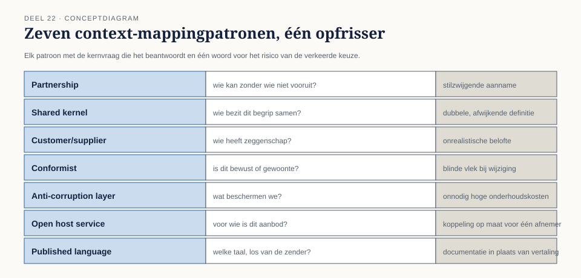
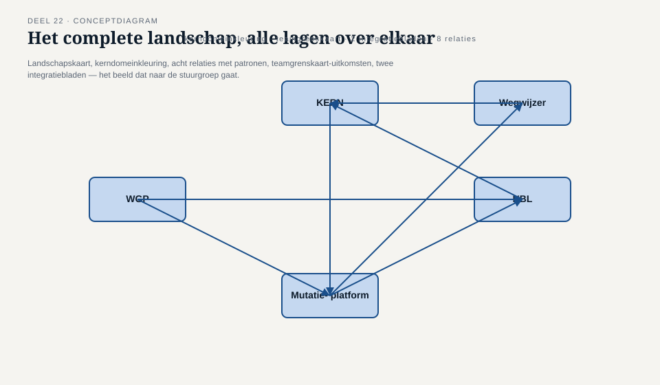
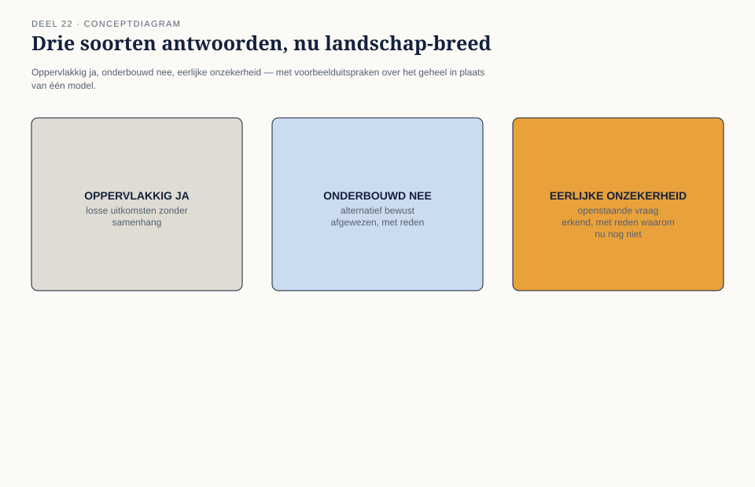
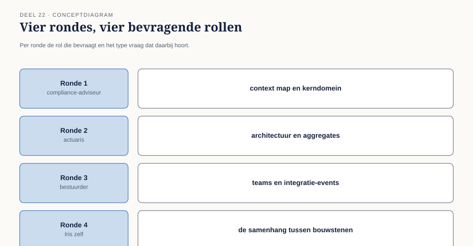

Deel 22 — Examentraining iSAQB-module (strategisch deel) + portfolio
Slidedeck · Ductus-cursus Domain-Driven Design · niveau 2 · deel 22 van 30 — afsluiting van niveau 2 · 36 slides
Slide 1 — Titel
Domain-Driven Design — deel 22 Examentraining iSAQB-module (strategisch deel) + portfolio Niveau 2: professional · afsluiting
Slide 2 — Elf delen
Landschapskaart. Kerndomein. Acht relaties, zeven patronen. Big picture, processen, voorbeelden. Consistentiegrenzen, architectuur. Teams. Domain events.
Slide 3 — Iris, de uitnodiging
Over drie weken: de volledige programmastuurgroep. Bestuur. Actuaris. Extern compliance-adviseur.
Slide 4 — Iris
“Dit is de presentatie waarmee ik moet kunnen beslissen of het Mutatieplatform op de goede grondslag wordt gebouwd.”
Slide 5 — Daan
“Ik weet niet of ik dat allemaal tegelijk overtuigend kan vasthouden.”
Slide 6 — Foppe
“Niemand houdt elf delen aan detail tegelijk vast. Wat je moet kunnen: het geheel laten zien als één verhaal, en bij elke vraag terug naar de onderbouwing.”
Slide 7 — Wat dit deel oplevert
- Deel A: de strategische module-toets
- Deel B: het portfolio — het landschap gebundeld
- Vier rondes, vier bevragers
Slide 8 — Deel A: de strategische vragenbank
Eigen vragenbank, stijl van de iSAQB Advanced-module DDD. Geen echte examenvragen.
Slide 9 — Hoe een strategische vraag werkt
- Het juiste patroon of de juiste classificatie benoemen
- Onderbouwen — en het verleidelijke alternatief weerleggen
Slide 10 — Voorbeeldvraag
Claimsafdeling en financiële afdeling, hetzelfde begrip, twee verschillende doelen — nooit uitgesproken.
Slide 11 — Uitwerking
Anti-corruption layer aan de kant van de financiële afdeling. Geen shared kernel — de twee doelen vragen geen gedeeld model.
Slide 12 —

De zeven context-mappingpatronen, elk met zijn kernvraag en het risico van de verkeerde keuze
Slide 13 — Deel B: het portfolio
Niet één model. Het complete landschap. Vijf systemen. Acht relaties. Elf delen werk.
Slide 14 — Waarom dit een aparte vaardigheid is
Een scenario beantwoorden test één patroon. Een portfolio bundelen test de samenhang tussen elf beslissingen.
Slide 15 — De actuaris, straks
“Waarom is KERN-Mutatieplatform een shared kernel terwijl Wegwijzer-KERN een conformist is — en hoe weet ik dat dit geen toeval is?”
Slide 16 — De vier portfoliobouwstenen
- Context map
- Kerndomeinkeuze
- Architectuurbeslissingen
- Teamtopologie
Slide 17 — Het vijfde element: de samenhang
Niet vier losse onderdelen. Waarom ondersteunt de ene keuze de andere?
Slide 18 —

Het complete landschap met alle lagen van niveau 2 over elkaar — het beeld voor de stuurgroep
Slide 19 — Drie soorten antwoorden, nu op landschapschaal
Oppervlakkig ja — losse onderdelen naast elkaar. Onderbouwd nee — een alternatief bewust verworpen. Eerlijke onzekerheid — een openstaande vraag erkend.
Slide 20 —

Drie kolommen, nu met landschap-brede voorbeelden
Slide 21 — De vier rondes
- Context map en kerndomein — compliance-adviseur
- Architectuur en consistentie — actuaris
- Teams en integratie-events — bestuurder
- De samenhang — Iris
Slide 22 —

De vier rondes, elk met bevrager en type vraag
Slide 23 — Ronde 1 — de compliance-adviseur
“Ik zie acht verschillende soorten relaties. Waarom niet gewoon overal dezelfde afspraak?”
Slide 24 — Vera
“Eén afspraak voor alles zou het Mutatieplatform te weinig zeggenschap geven, of Wegwijzer onnodig zwaar belasten.”
Slide 25 — Ronde 2 — de actuaris
“Waar garandeert jullie model dat een deelnemer nooit tegenstrijdig wordt bijgewerkt?”
Slide 26 — Otto
Aggregate-grens (deel 18) + domain event (deel 21) — minder gelijktijdige, rechtstreekse toegang.
Slide 27 — De actuaris, doorvragen
“En als er tóch twee tegenstrijdige wijzigingen tegelijk binnenkomen?”
Slide 28 — Het team
“Dat is nog niet volledig uitgewerkt — maar de consistentiegrens legt al vast wáár het moet gebeuren.” Eerlijke onzekerheid, geen verzonnen antwoord.
Slide 29 — Ronde 3 — de bestuurder
“Wat gebeurt er met dit landschap als de kleinste teams niet meegroeien?”
Slide 30 — Karsten
“De druk verschuift naar de plek die de teamgrenskaart al voorspelde — niet naar wat het domein het belangrijkst vindt.”
Slide 31 — Ronde 4 — Iris, de samenhangsvraag
“Leg uit waarom jullie kerndomeinkeuze en jullie teamgrenskaart elkaar niet tegenspreken — of leg uit waarom ze dat wél doen.”
Slide 32 — Daan
“Ze wijzen naar dezelfde onopgeloste plek: het Mutatieplatform is kerndomein én het team met de meeste druk. Geen tegenspraak — een bevestiging.”
Slide 33 — Iris
“Dat is precies het soort antwoord waarmee ik naar de bestuurder kan.”
Slide 34 — Niveau 2 afgerond
Het landschap in kaart, geordend, getoetst, verlicht. Eén keer als geheel verdedigd.
Slide 35 — Wat openstaat
Samenloop tijdens de Wtp-overgang. Groeiende druk op te kleine teams.
Slide 36 — Vooruit naar niveau 3
Stelselovergang. Fusiescenario. Daan, van landschapskaart naar bestuurlijke verdediging van één context-mappingbesluit onder tijdsdruk.